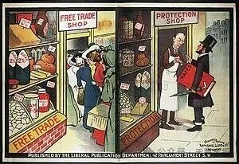
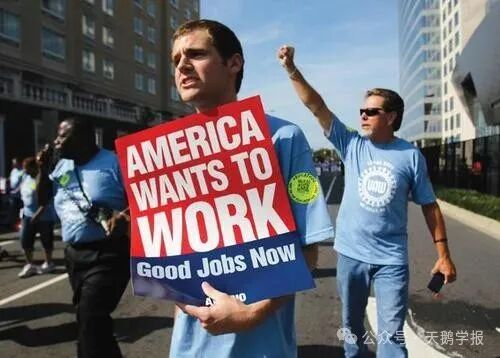
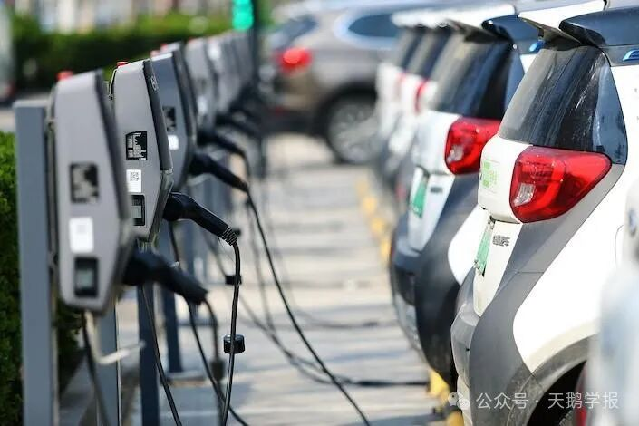

如果你向经济学家询问他们最喜欢的经济学理论时，我相信比较优势理论一定会成为最多人提及的答案。正如Samuelson的评价——正确但并非显而易见（both true and non- trivial）, 距今已有200多年历史的比较优势理论，仍在用英格兰和葡萄牙以及布匹和红酒的简约叙事，滋养着一代又一代的经济学学生。而它真正令人神往的，是那看似简单的数学公式下庞大的经济学体系：机会成本、套利动机、资源的稀缺性、“看不见的手”… 当这些复杂的理论被一个简单的模型刻画地淋漓尽致，我想任何一个经济学家应该都难以抗拒。
自此，比较优势概念打开了自由贸易理论的大门，证明了自由贸易不是一场零和博弈，无数的理论在此基础上生根发芽，自由贸易也成为了经济学家们的圣经。
然而，对比较优势理论的质疑之声却从未断绝：知识分子们对比较优势概念犹豫不决，政治家们不断地抨击自由贸易。Krugman在《李嘉图令人费解的思想》（Ricardo’s Difficult Idea）中对此进行了解释，他认为缺少经济学知识和猎奇心理是李嘉图比较优势理论不被大众接受的两个主要原因。但即便我们让所有人都深刻理解了李嘉图模型的内在逻辑，比较优势理论就能得到所有人的支持吗？即便我们说服所有人自由贸易是世界经济体的帕累托改进，我们就能完成从比较优势到自由贸易的飞跃吗？
结果并不尽然。因为我们忽略了比较优势理论中的一个重要因素——人。
在李嘉图模型中，人是劳动力的载体，是符号化的生产要素，是在市场的作用下长期来看能够自由流动的L。但在现实生活中，人是你和我，是富人和穷人，是生产者和消费者，是安土重迁的劳动者，是善于诡辩的政治家...
而比较优势乃至自由贸易绝不是所有人的福音：它是富人的炼金石，是穷人的地狱门，是政客的竞选筹码，是国家的政治工具。比较优势理论告诉我们，无论哪个国家都会因为具有比较优势而从自由贸易中获益。但最终能否实现自由贸易，则是一场人与人之间的博弈。

英国自由党的政治海报：自由贸易经济与贸易保护主义经济的差异
Producers VS Consumers
国际贸易首先是生产者之间的博弈。比较优势理论表明，自由贸易能够使国家专业化生产自己具有比较优势的产品，提高世界整体的生产率水平，并使每个国家都能从中受益。比如Apple、Microsoft等科技巨头，在进入国际市场后面临更大的消费需求，更利好的市场价格，盈利水平也随之大幅提升。此外，企业还能够通过“进口中学习”、“出口中学习”等渠道提高技术水平，完成产业升级。我国产业结构之所以能实现向高附加值产业的转型，在很大程度上就依赖于贸易中的学习。
然而，并不是所有生产者都能从自由贸易中获益。随着制造业中心不断迁移，发达国家的中低端制造业工人逐步被发展中国家相对廉价的劳动力所取代，他们岁月静好的生活又将被如何改写？是顺应全球化的潮流，通过接受教育和培训，转型到更高端的工作岗位；还是因无法适应而沉沦，最终陷入酗酒、药物滥用和吸毒的困境。我们要知道，人不是机器，比较优势的劝解在生活的困顿面前是何等无力。所以上岸者寥寥，多数人选择了放弃。

失业的美国工人
再者，生产者也是消费者，国际贸易市场上多元丰富的产品种类和经济的价格的确增加了每一个人的福利。因此，生产者与生产者间的权衡，生产者与消费者间的权衡，是每一个制定国际贸易政策的决策者应该考虑的问题。当特朗普政府推行的贸易保护主义政策将美国的消费者价格指数（CPI）推至40年未有的超高水平（8.60%）时，美国民众究竟是受益还是受损，恐怕完全不及他的预期吧。
Voters VS Policymakers
自由贸易的本质是市场经济在国家层面的延伸，那为什么市场经济的质疑声寥寥，而自由贸易的反对者却如此之多呢？因为贸易不仅是一个经济问题，而且是一个政治问题，涉及到国家的主权以及公民的政治权利。人们无法反对技术变革与市场竞争，却可以用自己的选票反对自由贸易：2016年美国总统大选时，进口竞争激烈的州投向共和党候选人的份额增多；英国脱欧期间，投票退出欧盟的人口比例与该地区遭受中国进口冲击存在正相关关系。为了选票的数量，精明的政客会在竞选中大肆宣扬披着爱国主义外衣的贸易保护主义，却也同时抛弃了自由贸易的丰硕果实。
德国43%受访者反对欧洲与美国签署自贸协议
此外，一些政策制定者并不会否认自由贸易的好处，而是试图通过改善分配政策来弥补自由贸易的缺憾。根据希克斯-卡尔多补偿原则，自由贸易所带来的经济增益似乎已经毋庸置疑，而真正棘手的问题的是这份增益是否能供所有人分享，而不为少数人独占。然而，向富人征收“富人税”会挫伤其生产积极性，为进口竞争部门工人减税无法帮助因贸易而失业的人，而福利措施、失业补贴等转移支付方式同样也面临着巨大的问题：为什么要将因贸易导致的失业和因其他方式（如技术替代）造成的失业区别对待？由此可见，想要利用政策修正自由贸易的损失在目前仍没有一个绝对完美的答案，还有很多可供亟待学者与政策制定者探索的空间。
Countries VS Countries
自由贸易不仅可以表现为人与人的博弈，在更高层面上，还可以体现为国家与国家间的博弈。这种博弈一方面来自国家比较优势的选择。比较优势是通过国家间的比较所产生的，可以理解为由市场机制所决定。但同时，比较优势也是动态可变、具有一定先验性的。国家可以通过产业扶持政策投资自己具有潜在比较优势的产业，并将其产品投入到国际市场上试水，与外国产品进行竞争，从而检验自己的比较优势并创造新的比较优势。我国新能源汽车行业从1992年被列入“八五计划”到如今连续7年产销量世界第一，新能源汽车能够成为我国的比较优势离不开产业政策的大力扶持。

中国新能源汽车产业蓬勃发展
另一方面，国家与国家间的博弈也可以表现为对彼此比较优势的限制。2018年7月，美国针对中国对美出口的价值340亿美元商品（汽车、硬盘、飞机零部件等）加征25%关税，中美贸易战随之正式打响。而中国立刻采取反制措施，对美国的同等价值量商品（农产品、汽车、水产品）加征同等比例的报复性关税。那些信奉“中国冲击波”的人们，试图通过关税手段打击中国出口品来提振美国经济的人们，这样的两败俱伤是你们想看到的吗？此处暂且不讨论与中国的贸易对美国经济发展的促进作用以及所谓的“中国综合征”是否是无稽之谈，当一个国家将贸易限制作为武器刺向其他国家时，他不应忽略国际竞技场上的每一个国家都拥有同样的武器，剑拔弩张的结果很有可能是自掘坟墓。
结语
自由贸易可以由人产生，同样也可以被人终结，自由贸易之船究竟驶向何方最终取决于每一位舵手的航向，而航向又取决于舵手的眼界。